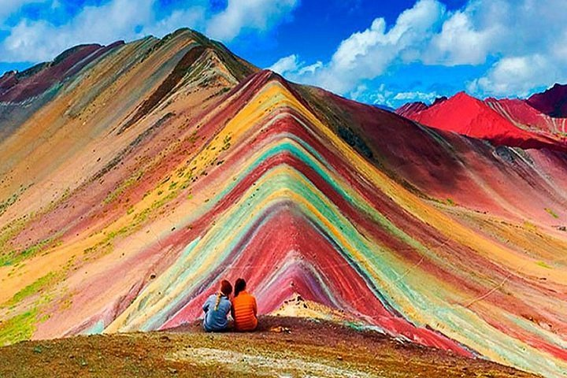

Miraflores City

Lima, the vibrant capital city of Peru, is a captivating blend of rich history, modernity, and cultural diversity. Situated along the Pacific coast, this bustling metropolis showcases a unique fusion of colonial architecture, ancient ruins, and contemporary high-rises. Lima's warm and friendly locals, known as Limeños, welcome visitors with open arms, inviting them to explore its fascinating museums, surf-worthy beaches, and lively markets. A visit to Lima is an immersive experience where history, culture, and mouthwatering culinary delights intertwine, leaving an indelible impression on all who venture into its captivating embrace.
Macchu Picchu

Machu Picchu, nestled in the breathtaking Andes Mountains of Peru, is an ancient Incan citadel that elicits awe and wonder. This UNESCO World Heritage Site, shrouded in mist and surrounded by lush greenery, transports visitors to a mystical past. With its intricate stone architecture, terraced fields, and sacred temples, Machu Picchu stands as a testament to the Incan civilization's ingenuity and spiritual beliefs. As one explores the intricate network of paths and marvels at the panoramic views, an overwhelming sense of mystery and beauty engulfs the soul, making Machu Picchu an unforgettable journey through history and nature.
Seven Colors Mountain
Cerro de 7 Colores, also known as the Rainbow Mountain, is a mesmerizing natural wonder located in Peru. Situated in the Andes Mountains, this geological marvel showcases a spectacular display of vibrant colors across its slopes. Layers of mineral deposits have created a surreal landscape, with hues ranging from deep reds and purples to striking yellows and greens. Trekking to this majestic site offers an unforgettable adventure, with breathtaking views of the surrounding peaks and valleys. Cerro de 7 Colores stands as a testament to the Earth's artistic beauty and captivates all who venture to witness its kaleidoscopic splendor.
Amazon River

The Amazon River, coursing through Peru, is an extraordinary natural marvel. With its vast expanse and powerful currents, it is the lifeline of the Amazon rainforest. Flowing through dense foliage and diverse ecosystems, it sustains an incredible array of plant and animal species. As the world's largest river by volume, it carries a tremendous amount of water, shaping the landscape and providing a vital habitat for countless creatures. Exploring the Amazon River unveils a world of unparalleled biodiversity, offering glimpses of captivating wildlife, lush vegetation, and the sheer magnitude of nature's splendor.
Titicaca Lake

Lake Titicaca, nestled high in the Andes Mountains of Peru, is a breathtaking natural wonder. It is the largest lake in South America and holds immense cultural and historical significance. Revered as a sacred place by the Incas, its shimmering blue waters are framed by snow-capped peaks and picturesque islands. The lake is home to traditional indigenous communities, such as the Uros people, who live on floating reed islands. Exploring Lake Titicaca unveils a world of ancient traditions, stunning landscapes, and a serene atmosphere, leaving visitors in awe of its beauty and cultural heritage.